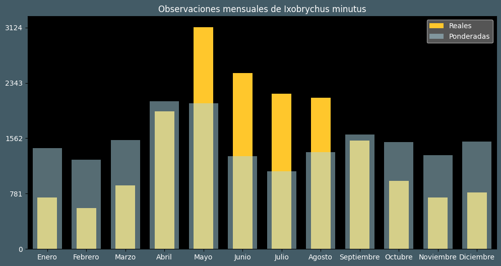

Observaciones por mes
Observations por hora

Categoría IUCN: LC
Género: Ixobrychus
Familia: Ardeidae
Orden: Pelecaniformes
Descubrimiento: Linnaeus (1766)
| Idioma | Nombre |
|---|---|
| Afrikaans (af) | Woudapie (kleinrietreier) |
| Arabic (ar) | واقة صغيرة |
| Belarusian (be) | Чапля-лазянiк |
| Bulgarian (bg) | Малък воден бик |
| Catalan (ca) | Martinet menut comú |
| Chinese (zh) | 小苇鳽 |
| Chinese traditional (zh-TW) | 小葦鳽 |
| Croatian (hr) | Čapljica voljak |
| Czech (cs) | Bukáček malý |
| Danish (da) | Dværghejre |
| Dutch (nl) | Woudaap |
| English (en) | Little bittern |
| Estonian (et) | Väikehüüp |
| Finnish (fi) | Pikkuhaikara |
| French (fr) | Blongios nain |
| German (de) | Zwergdommel |
| Greek (el) | Μικροτσικνιάς |
| Hebrew (he) | אנפית גמדית |
| Hungarian (hu) | Törpegém |
| Icelandic (is) | Rindilþvari |
| Indonesian (id) | ? |
| Italian (it) | Tarabusino |
| Japanese (ja) | ヒメヨシゴイ |
| Korean (ko) | ? |
| Latvian (lv) | Mazais dumpis |
| Lithuanian (lt) | Mažasis baublys |
| Maceodnian (mk) | Мал воден бик |
| Malayalam (ml) | ചിന്നക്കൊച്ച |
| North_sami (se) | Uhcaháigir |
| Norwegian (no) | Dvergrørdrum |
| Persian (fa) | بوتیمار کوچک |
| Polish (pl) | Bączek (zwyczajny) |
| Portuguese (pt) | Garçote-comum |
| Russian (ru) | Волчок |
| Serbian (sr) | Čapljica |
| Slovak (sk) | Bučiačik močiarny |
| Spanish (es) | Avetorillo común |
| Swedish (sv) | Dvärgrördrom |
| Thai (th) | ? |
| Turkish (tr) | Küçük balaban |
| Ukrainian (uk) | Бугайчик звичайний |